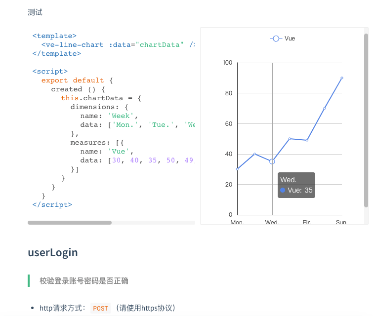
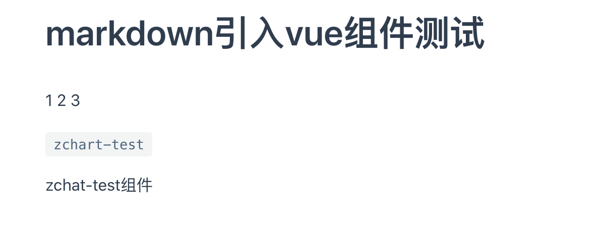
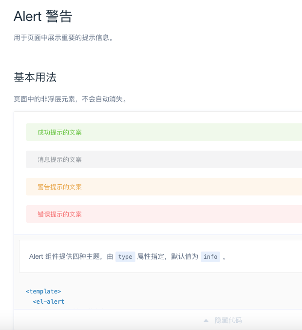

怎么写出类似element官网那样可以看代码运行效果的文档
这篇文章发布于 2020/10/25，归类于 Vue
标签：
UI组件官网，组件展示官网，dosify实例
对于UI组件、echarts 图表相关文档来说，能够实时看具体显示效果是必须的。它是将文档和 demo 合并在一起，这样更有说服力。那怎么写出类似的文档呢？这里来介绍三种方法：
- dosify
- vuepress
- element官网源码
docsify
一个神奇的文档网站生成器，支持 markdown 语法，可嵌入 vue 代码。基础用法可以参考文档: docsify ，这里介绍下嵌入vue代码需要注意的问题
由于 docsify 入口是 index.html，本身不支持 ES modules，假设 vue 示例代码中，需要引入 echarts 模块，是无法 import 直接运行的。需要通过在 index.html 引入 js 来引入组件。有一个比较好的示例，可以参考 ve-charts, 可以把源码 clone 下来跑一跑。通过 npm run build:lib 打包生成 umd 形式的 js文件，直接引入即可。
<!-- index.html部分代码 -->
<script src="//cdn.jsdelivr.net/npm/vue/dist/vue.min.js"></script>
<!-- vuep docsify插件，用于实时编辑、显示代码 -->
<script src="//cdn.jsdelivr.net/npm/vuep/dist/vuep.min.js"></script>
<!-- vuep默认是CommonJS规范，需要使用 module.exports，加babel后可以使用ES Modules的export default -->
<script src="https://unpkg.com/babel-standalone/babel.min.js"></script>
<script src="//unpkg.com/echarts@latest/dist/echarts.min.js"></script>
<!-- ve-echarts组件库输出的umd形式js文件，只载入这个js即可完整引入ve-echarts组件库 -->
<script src="./lib/ve-charts.umd.min.js"></script>README.md
<!-- README.md 里面嵌入vue代码 -->
<vuep template="#basicLine" :options="{ theme: 'vue', lineNumbers: false }"></vuep>
<script v-pre type="text/x-template" id="basicLine">
<template>
<ve-line-chart :data="chartData" />
</template>
<script>
export default {
created () {
this.chartData = {
dimensions: {
name: 'Week',
data: ['Mon.', 'Tue.', 'Wed.', 'Thu.', 'Fir.', 'Sat.', 'Sun.']
},
measures: [{
name: 'Vue',
data: [30, 40, 35, 50, 49, 70, 90]
}]
}
}
}
</script>效果如下图

vuepress
vuepress 是一个静态站点生成器，用于vue官网文档生成。可以内嵌vue代码，Using Vue in Markdown
一般vue组件需要在 .vuepress/components/ 下实现，在 markdown 语法中才能使用。下面是一个实例
# markdown引入vue组件测试
<span v-for="i in 3">{{ i }} </span>
`zchart-test`
<zchart-test></zchart-test>
element官网源码
它是自己写的一套构建程序，将 tpl 转 vue，markdown 解析时，内嵌 vue demo 会自动渲染代码，ElementUI官网源码: ElementUI官网 examples | github
下面以 alert文档源码 为例，来看看具体写法
## Alert 警告
用于页面中展示重要的提示信息。
### 基本用法
页面中的非浮层元素，不会自动消失。
:::demo Alert 组件提供四种主题，由`type`属性指定，默认值为`info`。
<template>
<el-alert
title="成功提示的文案"
type="success">
</el-alert>
<el-alert
title="消息提示的文案"
type="info">
</el-alert>
<el-alert
title="警告提示的文案"
type="warning">
</el-alert>
<el-alert
title="错误提示的文案"
type="error">
</el-alert>
</template>
:::
### 主题渲染效果如下

// 将 官网.tpl单文件组件转.vue
// /examples/pages/template/component.tpl 就是element组件文档的入口
// https://github.com/ElemeFE/element/blob/dev/build/bin/i18n.js
'use strict';
var fs = require('fs');
var path = require('path');
var langConfig = require('../../examples/i18n/page.json');
langConfig.forEach(lang => {
try {
fs.statSync(path.resolve(__dirname, `../../examples/pages/${ lang.lang }`));
} catch (e) {
fs.mkdirSync(path.resolve(__dirname, `../../examples/pages/${ lang.lang }`));
}
Object.keys(lang.pages).forEach(page => {
var templatePath = path.resolve(__dirname, `../../examples/pages/template/${ page }.tpl`);
var outputPath = path.resolve(__dirname, `../../examples/pages/${ lang.lang }/${ page }.vue`);
var content = fs.readFileSync(templatePath, 'utf8');
var pairs = lang.pages[page];
Object.keys(pairs).forEach(key => {
content = content.replace(new RegExp(`<%=\\s*${ key }\\s*>`, 'g'), pairs[key]);
});
fs.writeFileSync(outputPath, content);
});
});/examples/pages/template/component.tpl 部分代码
<el-scrollbar class="page-component__nav">
<side-nav :data="navsData[lang]" :base="`/${ lang }/component`"></side-nav>
</el-scrollbar>
<div class="page-component__content">
<!-- 像 alert、button 文档切换，就是切的这里的路由 -->
<router-view class="content"></router-view>
<footer-nav></footer-nav>
</div>对应的路由代码
// element/examples/route.config.js为alert等文档添加路由部分代码
function addRoute(page, lang, index) {
const component = page.path === '/changelog'
? load(lang, 'changelog')
: loadDocs(lang, page.path); // 根据path载入对应的docs/zh-CN/xx.md
let child = {
path: page.path.slice(1),
meta: {
title: page.title || page.name,
description: page.description,
lang
},
name: 'component-' + lang + (page.title || page.name),
component: component.default || component
};
route[index].children.push(child);
}